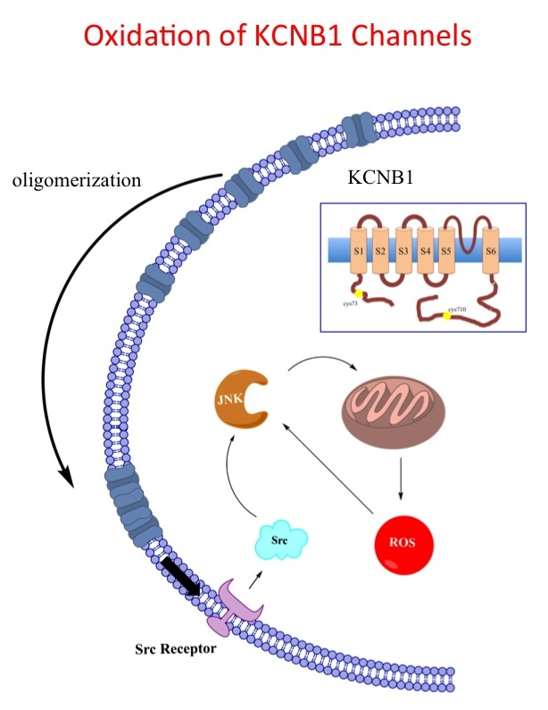
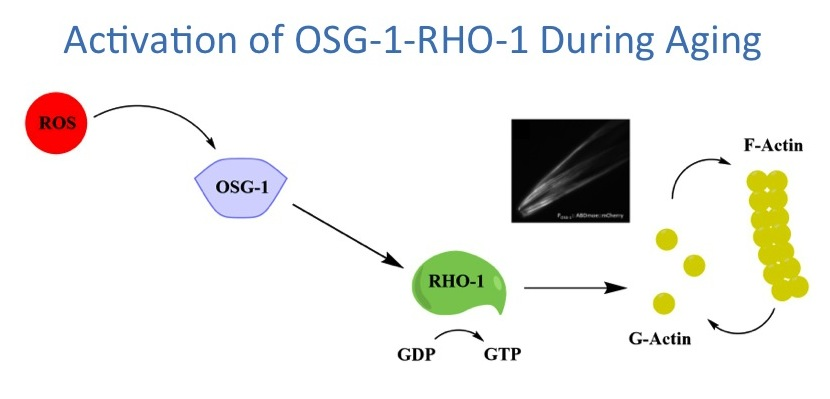

Research
The research of the laboratory revolves around the molecular basis of neuronal aging. During the past several years, we have been investigating how excess ROS modify K+ channels and how this mechanism - which we have been the first to demonstrate - contributes to the progressive decline in neuronal function which is part of the normal aging process and of neurodegenerative disease. More recently, we have implicated Rho GTPases signaling in aging. This finding has expanded our horizon and opened up a new avenue of research.
Oxidation of K+ channels in the mammalian brain

Research in the laboratory has shown that KCNB1 (formerly Kv2.1), a K+ channel abundant in brain, is directly susceptible to oxidation. Oxidized KCNB1 channels do not conduct current and aggregate in the membrane (oligomerization) inducing apoptosis via a Src tyrosine kinases mediated pathway. This in turn leads to the production of more ROS in a sort of auto-catalytic process. Our studies suggest that moderate levels of oxidized KCNB1 channels affect hippocampal and cortical excitability, and might lead to spatial learning and memory impairment experienced during normal aging. When ROS levels further increase, oxidation of KCNB1 may become exacerbated and lead to neuronal loss. Current projects aim at testing the effect of oxidation of KCNB1 channels in the aging mouse brain using a transgenic approach; 2) identifying anti-oxidant strategies that can provide a defense against neuronal aging and 3) developing computational techniques to model the effects of K+ channel oxidation in hippocampal networks. ROS-associated oxidative modifications of K+ channels are likely to be pervasive in the aging brain and therefore, oxidation of K+ channels has the potential to impact all those conditions characterized by an imbalance in the redox status of the cell, from normal senescence to neuropathies such as Alzheimer's disease.
Role of Rho signaling and the actin cytoskeleton in aging

We used C. elegans to discover genes that confer aging susceptibility. This effort has led us to OSG-1, a guanine nucleotide exchange factor (GEF) of the Dbl family. OSG-1 is unique in that is specifically activated during aging by conditions of oxidative stress. This gene promotes neuronal wear by dysregulating Rho signaling and consequently, actin dynamics (the inset shows visualization of F-actin in C. elegans muscle and neuronal tissue). We are currently trying to understand the mechanisms by which OSG-1 confers aging vulnerability and the molecular basis for its activation. Our long-term goal is to construct a dynamic picture of how OSG-1-RHO-1 signaling pathway is activated and develops. Considering the conservation of the actin cytoskeleton and its associated genes, this research holds promise for advancing the understanding into the basic mechanisms by which cells age.